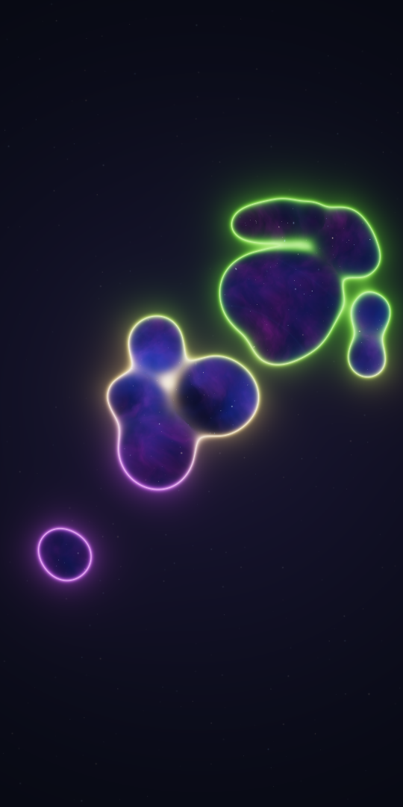

A little universe.
In your hands.
Liquid neon. Drifting starlight. Portals that respond to your touch. A separate web-app edition—no manual APK download.
Open and exploreChecking installation support…

The web edition adds custom colors and artistic effects.
Installing on your Android phone
Open this page in Chrome or Samsung Internet, not an in-app browser. Tap Install web app when your browser offers installation. Otherwise open the browser menu and look for Add to Home screen or Install app. Installation behavior varies by browser.
For offline use, keep this page open until it says Offline ready. Launch the app once before going offline. Your settings stay in this browser; clearing its site data removes them.
This is not the native Android application. This version uses HTML, JavaScript and WebGL 2. Chrome may internally package an installed web app as a WebAPK; you do not download or sideload an APK file yourself. The native Java / OpenGL ES project is a separate delivery.